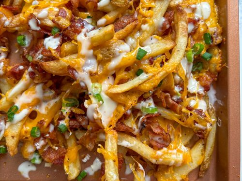

Loaded Fries

Description
This is a simple recipe that takes less than a half hour to create.
Ingredients
Optional
Steps
Step 1: Cook the fries fully. Can be any shape or size of fry. If you want to add a meat like the chicken or steak, go ahead and prepare those as well.
Step 2: Put the fries on a plate. Top them with the queso cheese.
Step 3: Add more cheeses or any meats if you want. Otherwise add the bacon bits.
Step 4: Head it up in the microwave for at least 30 seconds to warm up the cheese, or help any shredded cheese you have added melt.
Step 5: Pull it out and add some sour cream or eat it as is.